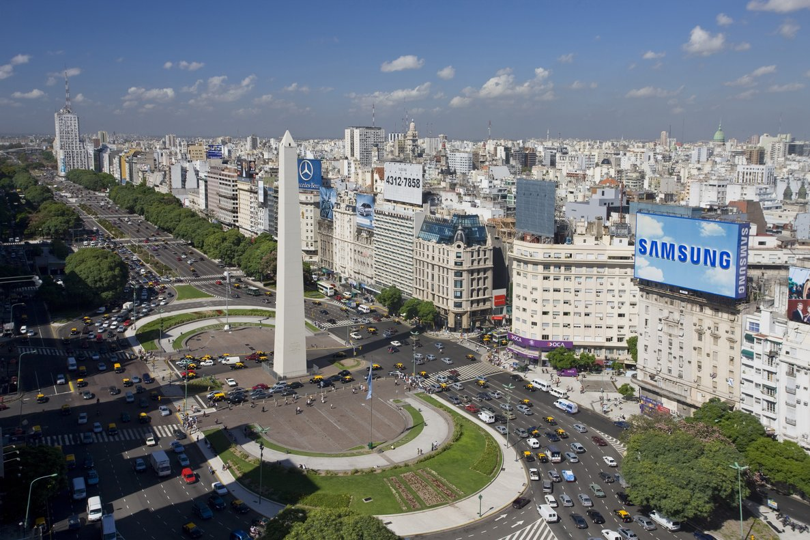
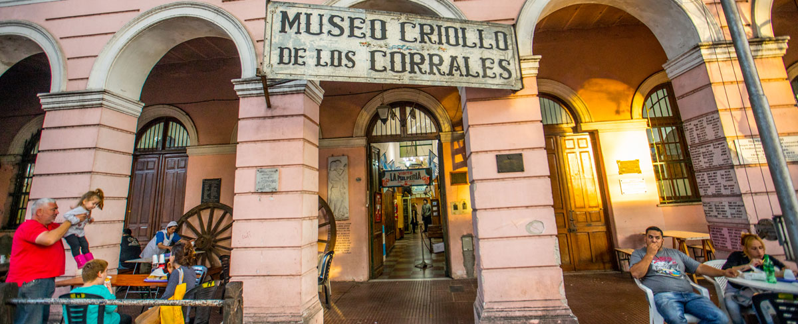
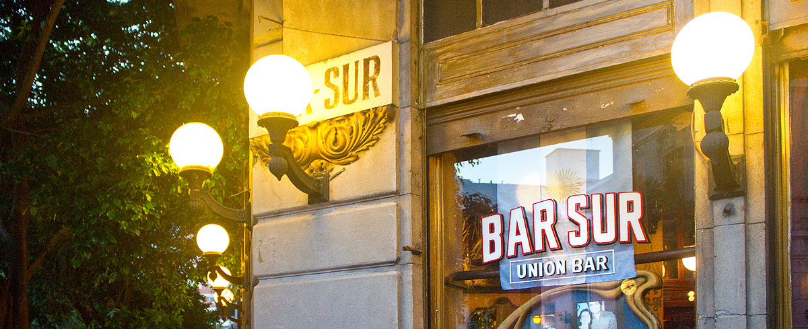

Buenos Aires
Buenos Aires es la gran capital cosmopolita de Argentina. Su centro es la Plaza de Mayo, rodeada de imponentes edificios del siglo XIX, incluida la Casa Rosada, el icónico palacio presidencial que tiene varios balcones. Entre otras atracciones importantes, se incluyen el Teatro Colón, un lujoso teatro de ópera de 1908 con cerca de 2,500 asientos, y el moderno museo MALBA, que exhibe arte latinoamericano.
Dominique: Para mi este continente es el mas especial. Es el lugar de mis ancestros y mucha de mi familia tambien vive ahi. No solo eso, si no tambien es donde vive el amor de mi vida. Definitivamente los paises que une debe visitar son Belgica y Holanda y si uno quiere visitar un lugar aun mas especial podria visitar Bielorrusia o Ucrania. Estos dos ultimos paises son frequentemene olvidados por eso presentan una gran opportunidad para conecer algo unico y vivir experiencias inolvidables.
ACTIVIDADES Y LUGARES PARA VISITAR

FESTIVAL Y MUNDIAL DE TANGO
MUSEOS DE BUENOS AIRES

MONUMENTOS DE BUENOS AIRES
BARES NOTABLES

INICIO
ACERCA DE
DESTINOS
BLOG
CONTACTO